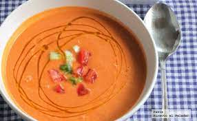

Tenemos muchas recetas de ensaladilla, y no nos cansamos de probar varianes nuevas. Nos encanta prepararla a menudo en verano para dejarla lista a primera hora en la nevera, y compartirla por sí sola o con otros platos en el almuerzo o la cena, siempre vigilando al máximo la seguridad alimentaria. Para reducir riesgos, podemos emplear lactonesa con leche o bebida vegetal en lugar de huevo, o recurrir a una buena marca comercial.

El gazpacho es una sopa fría con varios ingredientes como aceite de oliva, vinagre, agua, hortalizas crudas, generalmente tomates, pepinos, pimientos y ajo. Hay versiones antiguas que añaden a los ingredientes principales harina de habas, naranjas amargas o almendras y no incluyen tomate, que no se utilizó entre sus ingredientes hasta la colonización de América.
 Gazpacho andaluz